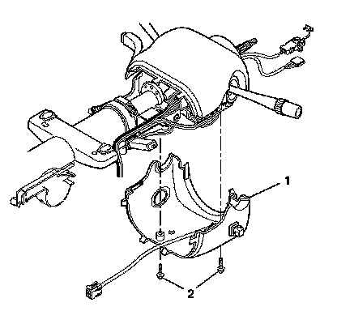
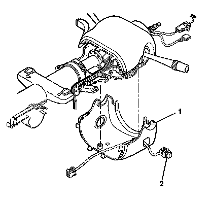
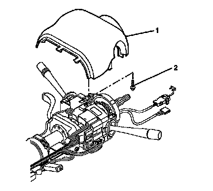
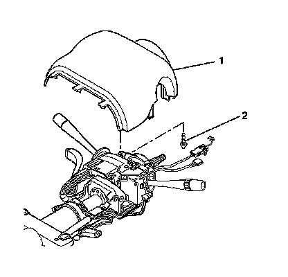

Pedal Positioning Switch: Service and Repair
Brake and Accelerator Pedal Adjuster Switch Replacement
Removal Procedure

Caution: Refer to SIR Caution (SIR Caution) .
1. Disable the SIR system. Refer to SIR Disabling and Enabling (Service and Repair) .
2. Disconnect the adjuster pedal switch connector at the base of the steering column.
3. Remove the wire harness straps from the wire harness assembly.
4. Remove the adjuster pedal switch lead from the wire harness assembly.
5. Remove the 2 pan head tapping screws (2) from the lower trim cover (1).
6. Remove the lower trim cover (2).

7. Remove the adjuster pedal switch assembly (2) from the lower trim cover (1).

8. Remove the TORX(R) head screw (2) from the upper trim cover (1).
9. Remove the upper trim cover (1).
Installation Procedure

Notice: Refer to Fastener Notice (Fastener Notice) .
1. Install the upper trim cover (1) and secure by using the TORX(R) head screw (2).
Tighten the screws to 1.5 N.m (13 lb in).
2. Install the adjuster pedal switch assembly (2) into the lower trim cover (1).
3. Install the lower trim cover (1).
4. Install the 2 pan head tapping screws (2) into the lower trim cover (1).
Tighten the screws to 3.5 N.m (31 lb in).
5. Route the adjuster pedal switch lead into the wire harness assembly.
6. Install the wire harness straps onto the wire harness assembly.
7. Connect the adjuster pedal switch connector at the base of the steering column.
8. Enable the SIR system. Refer to SIR Disabling and Enabling (Service and Repair) .